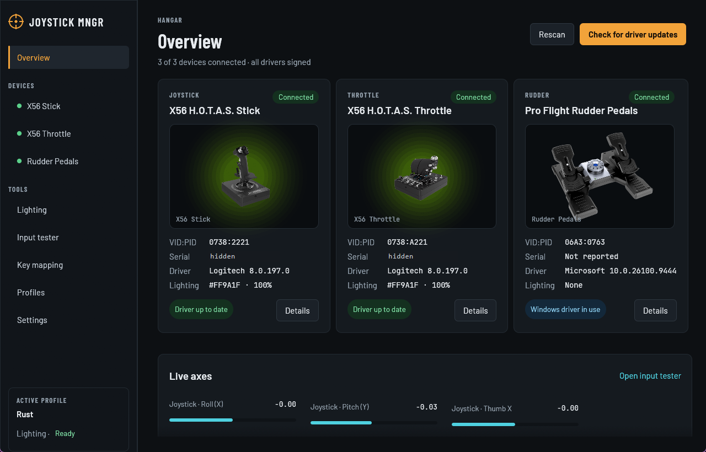
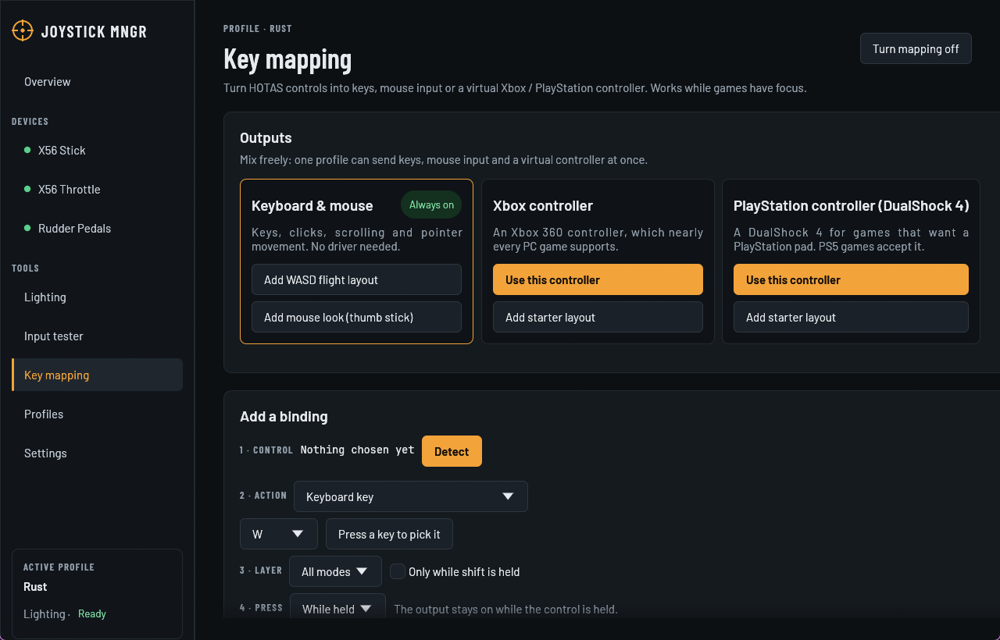

Overview and drivers
Connection, VID:PID, driver version and lighting for every device. Searches Windows Update for newer signed drivers and repairs drivers that Windows blocks.
Free & open source · Windows 10 / 11
Joystick Manager checks drivers, sets the RGB lighting, maps every button and axis to keys, mouse or a virtual Xbox / PlayStation controller, and fixes stick drift. Built in Rust, small and fast.
Latest release on GitHub · MIT licence

Supports the Logitech X56 H.O.T.A.S. stick and throttle and the Saitek Pro Flight Rudder Pedals. Everything runs on your PC; no account, no telemetry.
Connection, VID:PID, driver version and lighting for every device. Searches Windows Update for newer signed drivers and repairs drivers that Windows blocks.
Colour and brightness for the stick and throttle, with breathing, rainbow, two-colour fade and strobe effects at any speed.
Bind any button, hat or axis to keys, clicks, the wheel, pointer movement, or a virtual Xbox 360 or DualShock 4 controller. Reacts to each report the moment it arrives.
An axis drives a key like a magnetic keyboard switch: adjustable actuation point, rapid trigger and continuous rapid trigger.
Each position of the throttle's mode switch can load its own profile. Buttons can act on hold, toggle, short tap, long hold or double tap.
Measures every axis at rest for 30 seconds, re-centres it and hides the jitter for everything the app sends.
Named setups with lighting, axis tuning and mapping that switch automatically when a game starts. Import and export as JSON.
Closes to the tray, starts with Windows, dims the lights when idle and installs updates from GitHub after checking their SHA-256 checksum.
The language follows Windows and can be changed in Settings.
The same dark cockpit theme on every page.


Windows 10 or 11, 64-bit.
JoystickManager-Setup-x.y.z.exe from the
latest release.The application (JoystickManager.exe) and its installer are signed in the
GitHub Actions release workflow, built
straight from the tagged source in this repository. Nothing is signed from a developer machine.
The project is applying for free code signing for open-source projects provided by SignPath.io, with a certificate by SignPath Foundation. Until that is in place, releases carry a self-signed NikiCoding certificate.
| Committers and reviewers | NNKtv28 |
| Approvers | NNKtv28 |
Only an approver can publish a release, by pushing a version tag that starts the release workflow.
Joystick Manager collects no personal data, has no account and sends no telemetry or analytics. It only connects to other systems in the cases below, each needed for a feature you can see in the app.
These requests send only what any web request does, such as your IP address, to GitHub, Logitech or Microsoft under their own privacy policies. Settings, profiles and calibration stay in your Windows user profile.